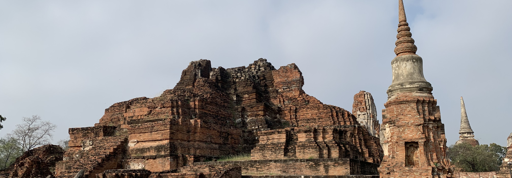
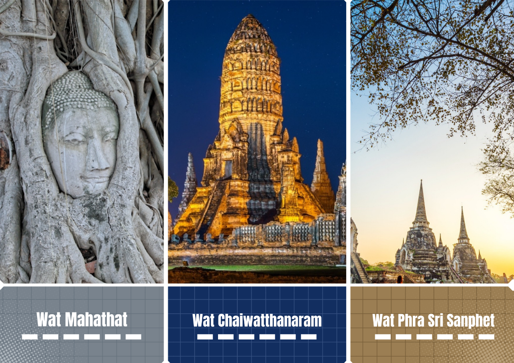
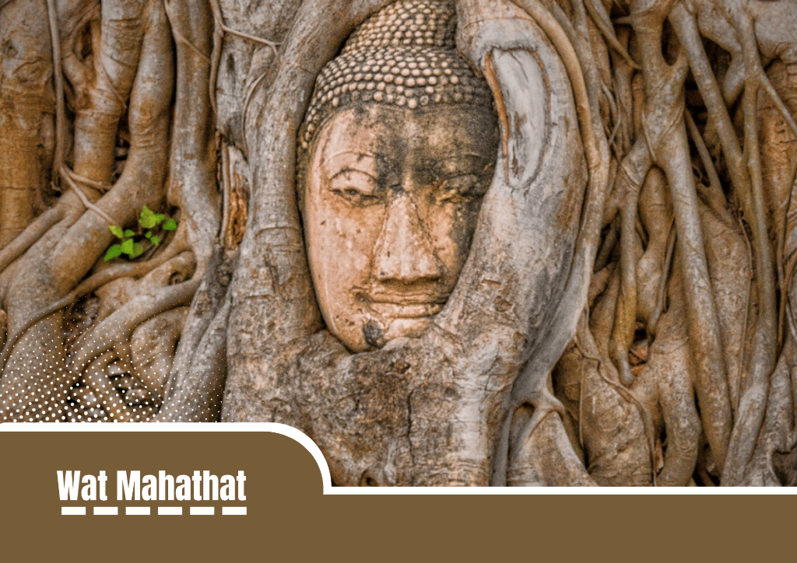
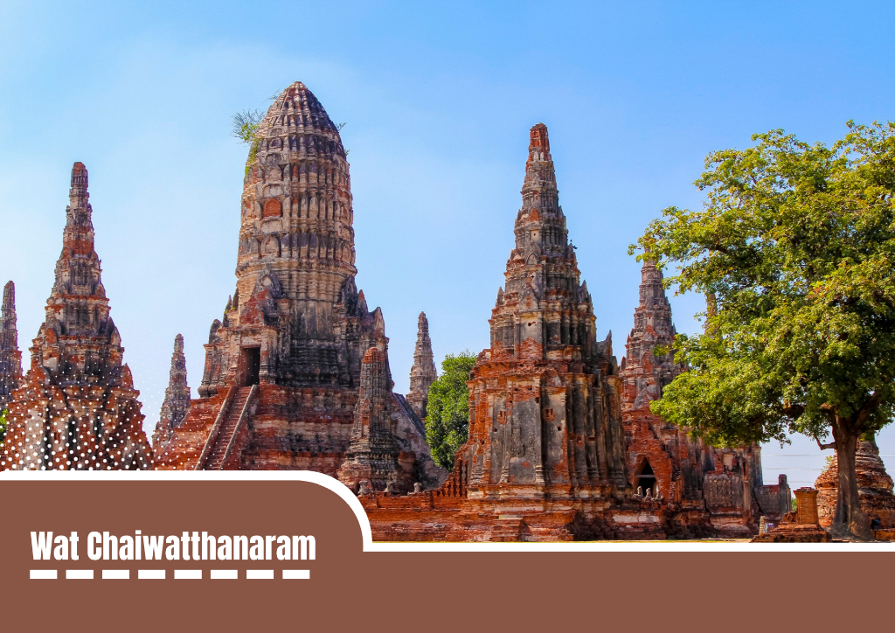
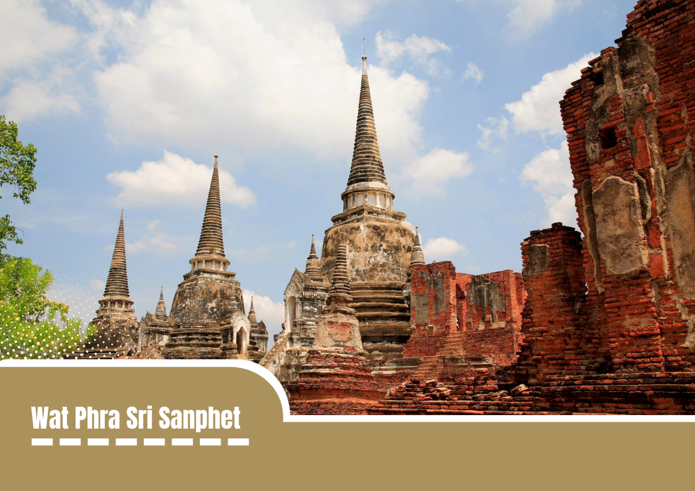

Ayutthaya Heritage, your ultimate visual inspiration for exploring Thailand’s most breathtaking ancient kingdom.
Frozen in time, the majestic ruins of Ayutthaya tell a story of past grandeur,
where towering stone monuments blend seamlessly with the beauty of nature.
Beyond its breathtaking ruins, Ayutthaya offers countless places to explore, making it a perfect destination for history lovers, culture seekers, and travelers alike.
Visitors can wander through iconic temples such as Wat Mahathat, famous for its Buddha head embraced by tree roots, Wat Chaiwatthanaram, known for its stunning riverside architecture, and Wat Phra Sri Sanphet, the former royal temple of the ancient palace.
With its impressive temples, historic landmarks, and peaceful riverside scenery, every corner of Ayutthaya offers a new glimpse into Thailand’s fascinating past.

Wat Mahathat stands as one of the most compelling testaments to the grandeur and eventual fall of the ancient Ayutthaya Kingdom.
Built in the late 14th century, this expansive temple complex served as the religious epicenter of the empire, housing precious relics of the Buddha and the seat of the Supreme Patriarch.
Today, its weathered red-brick ruins, soaring shattered towers, and long rows of headless stone Buddhas evoke a profound sense of history and spiritual resilience.
The absolute focal point for visitors is the world-famous sandstone Buddha head beautifully cradled within the growing roots of a Bodhi tree, a serene image of nature and sacred art merging over centuries of abandonment.

The ultimate highlight of Wat Chaiwatthanaram is its breathtaking Khmer-style architectural design, which serves as a grand physical representation of the Buddhist and Hindu universe.
At its heart stands a majestic 33-meter-tall central prang (tower) symbolizing Mount Meru, the mythical center of the cosmos, which is symmetrically flanked by four smaller corner towers and surrounded by eight distinct octagonal chedis.
This ancient royal compound truly comes alive during the golden hour and sunset, when the fading sunlight casts a warm, dramatic glow over the historic brick ruins, reflecting beautifully off the adjacent Chao Phraya River.
Today, this scenic, photogenic atmosphere makes it highly popular for visitors who rent traditional Thai costumes to capture timeless photographs against the beautifully preserved, illuminated backdrop.

The three majestic, bell-shaped Ceylonese stupas standing in a precise row form the unmistakable profile of Wat Phra Sri Sanphet.
Serving as the ultimate spiritual heart of the old capital, this grand monument was built directly inside the royal palace complex to hold the ashes of three great kings, creating a unique layout that later inspired the design of Bangkok's Temple of the Emerald Buddha.
Though invading forces entirely burned the temple and melted down its legendary 16-meter golden Buddha statue during the catastrophic fall of Ayutthaya, these three resilient towers managed to survive the fires.
Today, walking through the colossal brick columns and crumbling structural archways provides a profound sense of history, making it a powerful destination for travelers looking to witness the true, unyielding spirit of ancient Siam.
Made with Virtual Studio Code (HTML only), Canva & GitHub.